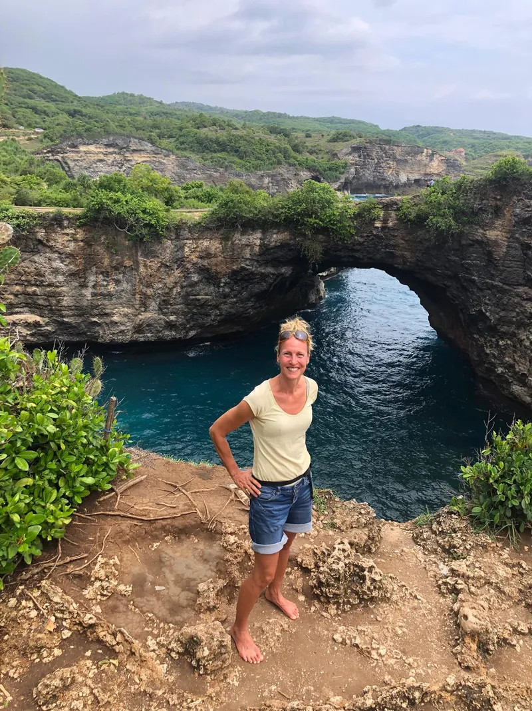

Frische Luft statt Studio
Wir trainieren draußen im Westpark, bei jedem Wetter. Der Kopf wird frei und die Akkus laden sich auf.
Outdoor-Training · Westpark München
Outdoor-Training und Pilates für Frauen (ca. 40-65 Jahre): Kraft, Haltung und Motivation in einer herzlichen Frauenrunde, draußen statt im Studio.
Andrea Blumenwitz · Fitnesstrainerin, Reha-Übungsleiterin, Pilatestrainerin

Kennst du das?
Der Alltag ist voll, die Jahre vergehen. Der Rücken meldet sich öfter, die Schultern zwicken nach langen Schreibtischtagen, und der innere Schweinehund wird nach der Arbeit immer größer. Auf anonyme Fitnessstudios hast du keine Lust? Du musst das nicht alleine angehen.
Wir trainieren draußen im Westpark, bei jedem Wetter. Der Kopf wird frei und die Akkus laden sich auf.
Eine kleine, wertschätzende Gruppe: Man lacht gemeinsam, nimmt Rücksicht aufeinander und zieht sich gegenseitig mit.
Pilates-Elemente, Theraband-Training, Core-Stabilität und Gleichgewicht. Die Übungen passe ich an deine Voraussetzungen an, auch bei Rücken- oder Schulterthemen.
Ob Kniebeugen-Challenge zu „Bring Sally Up“, Planks zu „Jerusalema“ oder Übungen mit den Minibändern: Bei uns wird geschwitzt, gejammert und gelacht, und hinterher fährt man stolz und gut gelaunt nach Hause.

Frische Luft. Kleine Gruppe.
Auf der Wiese im Westpark, nahe dem Rosengarten: Kräftigung, Pilates und Balance, mit Matten und Geräten, die ich für dich mitbringe.
Zum Winterprogramm
Aktuell
Gemeinsam fit durch den Winter: 15 Trainingswochen, 30 Einheiten mit Weihnachtspause. Gezielte Kräftigung, funktionelles Training, Pilates und Balance, strukturiert aufgebaut und in einer motivierenden Gruppe.
Wann & wo: Westpark (Nähe Rosengarten), Mo & Do 19:15 Uhr, 60 Minuten
Unverbindlich starten kannst du mit einer Probestunde.
Stimmen
Andrea motiviert mit ihrer herzlichen Art und schafft es, jede Trainingseinheit abwechslungsreich und herausfordernd zu gestalten. Ob Einsteiger oder Fortgeschrittene – jeder findet hier das passende Level und kann sich kontinuierlich weiterentwickeln. Ich habe durch ihr Training selbst eine enorme Veränderung erlebt: deutlich mehr Kraft, weniger Körperfett und ein ganz neues Körpergefühl.
Ich bin erst neu, seit Mitte Mai dabei und find es super. Die Stunden machen richtig Spaß und die Gruppe ist super nett. Das Training ist sehr abwechslungsreich, es wird nie langweilig. Andrea motiviert einen super und sorgt dafür, dass man alles gibt – Muskelkater am nächsten Tag ist fast garantiert. Sie geht individuell auf die Wünsche ein und passt die Übungen für einen an wenn man es noch nicht so schafft oder eine Einschränkung hat. Absolute Empfehlung!!!
Du machst es einfach soooo toll und bist immer so gut drauf. Ich fühle mich wirklich richtig richtig wohl bei euch auch wenn ich noch nicht so fit bin. Am Anfang hatte ich wirklich bedenken. Nun bin ich aber froh das ich so akzeptiert werde wie ich bin. Und ich hoffe natürlich auch immer noch besser zu werden 🤗
Ich bin seit März im Kurs bei Andrea und bin wirklich total begeistert: Die Kurse sind sehr abwechslungsreich, sehr intensiv (Bauch, Arme, Rücken!), immer wieder neue Übungen mit unterschiedlichen Geräten für Kraft. Dann wieder Gleichgewicht oder auch Pilatesübungen. Sie schaut genau hin und korrigiert die Haltung. Die Atmosphäre ist positiv und motivierend! Ich fühl mich wesentlich fitter und versuche keine Stunde zu verpassen!
PS: Es gibt auch immer wieder Infos zur Ernährung, die mich auf jeden Fall sensibilisieren, mal wieder was Neues auszuprobieren oder alte Gewohnheiten zu ändern.
Ich bin unglaublich froh, Andrea gefunden zu haben! Sie motiviert mich immer wieder aufs Neue und sorgt dafür, dass das Training effektiv ist und Spaß macht. Ihre herzliche und professionelle Art macht jede Trainingseinheit zu etwas Besonderem.
Andi ist mein Anker in der Woche: für gute Laune, frische Luft und immer wieder neue „Muskelerfahrungen“ 😊 Gemeinsam etwas für uns tun und Energie tanken – einfach stark!!!

Über mich
Ich bin Andrea: Fitnesstrainerin, Reha-Übungsleiterin, Pilatestrainerin, vierfache Mutter und studierte Diplom-Bauingenieurin. In meinem ersten Beruf habe ich gelernt, wie man Strukturen plant, die Belastungen standhalten. Dasselbe Prinzip gilt für den Körper: Eine stabile Körpermitte, ein starker Rücken und eine aufrechte Haltung entstehen durch ein durchdachtes, sicheres Fundament.
Seit vielen Jahren begleite ich Menschen in ganz unterschiedlichen Formaten, von ruhigen Angeboten wie Wirbelsäule, Rücken oder Pilates bis zu Cycling, Fatburn, BodyStyling und Reha-Kursen.
Mein Weg
Bewegung war für mich nie nur Ausgleich. Sie ist meine Art, mich selbst zu fordern, Grenzen zu verschieben und Vertrauen in den eigenen Körper zu entwickeln.
Ich habe den Vulkan in Guatemala bestiegen, bin durch den Dschungel auf Sumatra getrekkt, war allein in Südamerika und im Nahen Osten unterwegs und mit meiner Familie viele Monate auf Reisen, unter anderem in Kirgistan, Usbekistan, Oman und Mittelamerika. Den 100-Kilometer-Megamarsch von München nach Garmisch bin ich in 24 Stunden gegangen. Dabei habe ich gelernt: Wir halten körperlich und mental mehr aus, als wir in bequemen Momenten glauben.
Im Training verlange ich keine 100 Kilometer von dir. Bei mir gibt es keinen Druck: Ich nutze meine Erfahrung, um deine Grenzen sanft und Schritt für Schritt zu erweitern. Nicht Perfektion ist entscheidend, sondern die Bereitschaft, anzufangen.
Als Mutter von vier Söhnen gehören Organisation, Belastbarkeit und Flexibilität zum Alltag. Genau diese Gelassenheit und Ausdauer bringe ich in mein Training ein.

Qualifikationen
Schwerpunkte im Training
FAQ
Wir trainieren auch bei schlechtem Wetter: Im Winter ziehen wir uns warm an, und wenn ein Regenschauer droht, trainieren wir clever. Bisher gab es noch nie einen wetterbedingten Ausfall. Falls es wirklich einmal unmöglich ist (z. B. bei Gewitter) und eine Einheit ausfallen muss, wird der Termin hinten angehängt.
Eigentlich nichts. Matten, Therabänder und Kleingeräte habe ich dabei. Du brauchst nur bequeme Kleidung, Sportschuhe und eine Trinkflasche. Eine eigene Matte kannst du gern mitbringen, musst du aber nicht.
Ja, das Training ist für jedes Level geeignet. Die Übungen werden individuell angepasst.
Als Reha-Übungsleiterin (Orthopädie) passe ich die Übungen an deine Voraussetzungen an. Sprich mich vor der ersten Stunde einfach an. Bei gesundheitlichen Beschwerden gilt: Kläre die Teilnahme bitte vorab mit deiner Ärztin oder deinem Arzt ab.
Ja, die Probestunde ist kostenlos. Melde dich einfach über das Kontaktformular, per WhatsApp oder E-Mail.
Zertifizierte Präventionskurse nach § 20 SGB V sind in Planung. Das Frauen-Retreat im Juni ist als solcher Kurs vorgesehen, mehr dazu auf der Retreat-Seite.
Diese Outdoor-Kurse sind beendet. Das nächste Frühjahrsprogramm ist ab März 2027 geplant, die Details folgen. Wenn du dabei sein möchtest, trage ich dich gerne auf die Warteliste.

Outdoor-Training für Frauen (40-65 Jahre) im Westpark: Kraft, Pilates, Balance und Mindset, 10 Wochen, Mo & Do 19:15 Uhr.
Auf die Warteliste
Kraft, Stabilität und Ausdauer in kleiner Gruppe: funktionelle Kräftigung, Pilates-Elemente und gelenkschonendes Ausdauertraining.
Auf die WartelisteKontakt
Schreib mir einfach kurz, ob für eine unverbindliche Probestunde, das Winterprogramm oder das Retreat.
Ich arbeite auch mit Fitnessstudios, Vereinen und Trägern im Gesundheitsbereich zusammen. Kooperationen und Kursleitungen sind nach Absprache möglich.